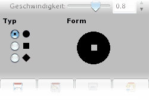

| 3.9. Ink | ||
|---|---|---|
 |
3. Brush Tools |  |
| 3.9. Ink | ||
|---|---|---|
| |
3. Brush Tools | |
The Ink tool uses a simulation of an ink pen with a controllable nib to paint solid brush strokes with an antialiased edge. The size, shape and angle of the nib can be set to determine how the strokes will be rendered.
You can find the Ink tool in several ways :
In the image-menu through: → → .
By clicking on the tool icon: in Toolbox.
By using the K keyboard shortcut.
You can find tool options by double clicking on the ink tool icon. in Toolbox.
![[Note]](../images/note.png)
|
Note |
|---|---|
|
See the Brush Tools Overview for a description of tool options that apply to many or all brush tools. |
Controls the apparent width of the pen's nib with values that ranges from 0 (very thin) to 20 (very thick).
This controls the apparent angle of the pen's nib relative to horizontal.
This controls the size of the nib, from minimum to maximum. Note that a size of 0 does not result in a nib of size zero, but rather a nib of minimum size.
Controls the apparent tilt of the nib relative to horizontal. This control and the Angle control described above are interrelated. Experimentation is the best means of learning how to use them.
This controls the effective size of the nib as a function of drawing speed. That is, as with a physical pen, the faster you draw, the narrower the line.
There are three nib shapes to choose from: circle, diamond, and square.
The geometry of the nib type can be adjusted by holding button 1 of the mouse on the small square at the center of the Shape icon and moving it around.
